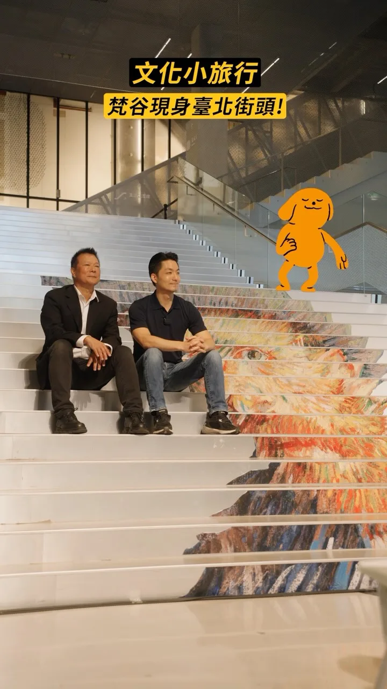
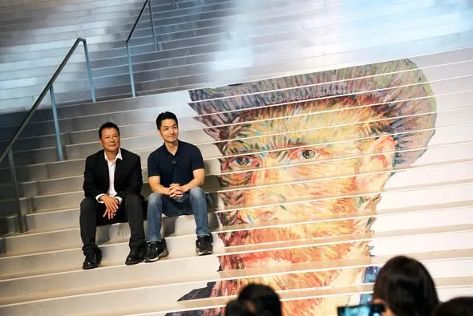

MAYOR2026.OBSERVE.TW
整理臺北、新北、桃園、臺中、臺南、高雄市長候選人的官方公開發文，跨平台合併時間軸與議題比例。
Six Municipalities
最後更新 2026-09-24 17:56
Latest


🍊 【再接再厲，柚來一櫃！麻豆文旦今天第三櫃航向加拿大✈️🇨🇦】 最道地、最甘甜的台南麻豆文旦，今天外銷加拿大的第三櫃正式裝櫃啟航囉！ 感謝所有的農友夥伴與辛勤付出的工作人員，因為大家的堅持與努力，才能把我們優質的台灣農產品推向國際舞台，讓海外的僑胞與國外朋友都能品嚐到這份來自台南的甜蜜滋味！ 亭妃會持續爭取資源、全力挺農民，作大家最強的後盾，讓台灣美味繼續在全世界發光發熱！ 💪✨

Long Jie’s Ultimate Housing Policy for Couples: "You Have Kids, I Provide the Home"


@zenolai:前鎮漁港需要務實對策，不需要「先唱衰、再收割」！ 前鎮漁港是世界級的遠洋漁港，漁獲佔全台九成，前鎮漁港的發展與漁民權益，是我長期關心推動，五大建設81億爭取到位，許多細項也多次召開協調會處理，攤商與船員關切的事項，中央、地方早處理拍板定案。 9月17日，我陪同行政院秘書長@changtunhan 、農業部長陳駿季實地視察，並與陳其邁市長共同討論，漁業署確定公布「兩年試營運計畫」： ✅ 運銷中心攤商兩年免費進駐，依衛生標準與使用需求調整動線、降溫及攤位設備。 ✅ 船員住宿費再爭取降至100元，餘額協調由船東負擔，外籍漁工等同免費入住。 ✅ 改善船員大樓供水、異味、隔音，持續爭取增加接駁公車班次，回應實際需求。 今年度預算藍白主提凍結「漁業發展」預算1000萬元、凍結「漁業管理」預算2000萬元，民眾黨團也凍結7581萬的漁業相關預算。相關言行漁民及高雄市民都看在眼裡。

何欣純喊話29區台中隊 六星市政拚全國第一！

立院臺中隊，全員集結完畢！ 去年，憑著臺中人骨子裡的理性與正義感，我們並肩走過最艱難的考驗。 這一次，為了這座城市的下一代，我們要再度凝聚、勇敢站出來！ 邀請所有熱愛臺中的鄉親好朋友，作夥站出來加入「#臺中隊」，一起把臺中推向臺灣最驕傲的旗艦城市！ 【臺中市長候選人 江啟臣競選總部成立大會】 時間｜10月4日（日）上午09:00 地點｜市政北一路、惠來路二段路口（歡迎轉發相揪！） 作夥拚、繼續衝，10/04 我們現場不見不散！

黃世杰南桃園競選總部成立大會，就在下週六！ 賴清德總統將來到現場，還有董事長樂團、雷昇傳藝劇團 Lei Sheng Art Group、無双樂團，帶來精彩演出！ 邀請您杰伴同行，成為改變桃園的力量，一起讓心桃園動起來💖 📌時間｜10/3（六）18:00進場 📌地點｜中壢區環中東路、後興路二段周邊空地


臺北文化小旅行 梵谷現身臺北街頭！ 臺北的魅力，不只在熱鬧的商圈、高聳的建築和嶄新的地標。 走進街頭巷尾，就能從一棟老建築、一條老街道，看見這座城市累積多年的歷史記憶與文化故事。 臺北也是一座多元開放的城市，匯聚了來自世界各地的藝術與創新。 我們首度將臺北文化小旅行與梵谷結合，讓藝術走出美術館、走進城市日常。在北藝、北流、松菸以及北投中心新村等地，一轉身就能看到梵谷的經典作品，也感受到臺北豐富的文化景色。 我們會持續推動臺北文化小旅行，也邀請大家放慢腳步，在臺北找到屬於自己旅行的意義。 Graphic animation : @theboogley


土地，是高雄人的家，不是隨意傾倒廢棄物的地方。 9月14日，我的團隊接到網路陳情，反映永安一處農地疑似遭大量堆置廢棄物。隔天，我和許采蓁議員的團隊立即到場勘查，沒想到眼前景象令人觸目驚心，近1800坪的農地，堆滿廢土、廢木材，堆置量約1.5萬立方公尺，換算起來，足足可以填滿6座奧運標準游泳池。周邊還是一片綠油油的稻田，原本的良田，卻成了一座廢棄物山。 今天，許采蓁議員也在市議會質詢揭發這起案件。市府表示早在去年12月就已經發現相關情況，今年年初也已將業者移送檢調，7月底要求提出清理計畫，卻要等到今年底才能完成清除。但該地在今年8月甚至還曾經發生火災燃燒。 我要問的是，既然去年就已經掌握，為什麼問題還能一路拖到今年？為什麼在已經發現、已經列管、甚至移送檢調之後，現場仍然持續堆置，甚至還發生火災？ 今天團隊再到現場查看，廢木材依然大量堆置、露天曝曬。這也正是我認為高雄現在最需要檢討的地方。不能每次都是等到事情發生、等到地方民眾陳情、等到民代調查，甚至引發大家關注之後，才開始處理。 美濃大峽谷、小港柏油山、燕巢垃圾山、田寮垃圾山，再到今天的永安廢材山。一塊又一塊土地被破壞，難道都要等到地方民眾陳情、民代調查，甚至引發大家關注之後，才開始處理？令人無法接受。 高雄要發展，但發展不能建立在犧牲土地與環境的代價上。高雄人的家園，不能任由廢棄物一座座堆起來。土地只有一塊，破壞了就很難恢復。我們不能再讓「發現一處、處理一處」成為常態，更不能只停留在事後查處。 真正要做的是把事前防範做好，強化監測、巡查、稽查與跨局處通報，對於已經列管的案件，也不能只是開單、移送之後就放著，而是要持續追蹤到真正改善為止。 未來如果我承擔市長的責任，我會要求相關局處加強查緝與後續追蹤，建立更完整的預警與巡查機制，在問題還沒有擴大以前，就先發現、先處理。該追查的要追查，該清除的要立即清除，更要把監測、稽查和責任追究真正做起來。 高雄的土地，不能再這樣被糟蹋。 無論他們掛上多少抹黑的看板，我們都不會被轉移焦點，該追查的責任，我們一定追到底。未來我也不會讓這樣的事情，一再發生。

土地，是高雄人的家，不是隨意傾倒廢棄物的地方。 9月14日，我的團隊接到網路陳情，反映永安一處農地疑似遭大量堆置廢棄物。隔天，我和許采蓁議員的團隊立即到場勘查，沒想到眼前景象令人觸目驚心，近1800坪的農地，堆滿廢土、廢木材，堆置量約1.5萬立方公尺，換算起來，足足可以填滿6座奧運標準游泳池。周邊還是一片綠油油的稻田，原本的良田，卻成了一座廢棄物山。 今天，許采蓁議員也在市議會質詢揭發這起案件。市府表示早在去年12月就已經發現相關情況，今年年初也已將業者移送檢調，7月底要求提出清理計畫，卻要等到今年底才能完成清除。但該地在今年8月甚至還曾經發生火災燃燒。 我要問的是，既然去年就已經掌握，為什麼問題還能一路拖到今年？為什麼在已經發現、已經列管、甚至移送檢調之後，現場仍然持續堆置，甚至還發生火災？ 今天團隊再到現場查看，廢木材依然大量堆置、露天曝曬。這也正是我認為高雄現在最需要檢討的地方。不能每次都是等到事情發生、等到地方民眾陳情、等到民代調查，甚至引發大家關注之後，才開始處理。 美濃大峽谷、小港柏油山、燕巢垃圾山、田寮垃圾山，再到今天的永安廢材山。一塊又一塊土地被破壞，難道都要等到地方民眾陳情、民代調查，甚至引發大家關注之後，才開始處理？令人無法接受。 高雄要發展，但發展不能建立在犧牲土地與環境的代價上。高雄人的家園，不能任由廢棄物一座座堆起來。土地只有一塊，破壞了就很難恢復。我們不能再讓「發現一處、處理一處」成為常態，更不能只停留在事後查處。 真正要做的是把事前防範做好，強化監測、巡查、稽查與跨局處通報，對於已經列管的案件，也不能只是開單、移送之後就放著，而是要持續追蹤到真正改善為止。 未來如果我承擔市長的責任，我會要求相關局處加強查緝與後續追蹤，建立更完整的預警與巡查機制，在問題還沒有擴大以前，就先發現、先處理。該追查的要追查，該清除的要立即清除，更要把監測、稽查和責任追究真正做起來。 高雄的土地，不能再這樣被糟蹋。 無論他們掛上多少抹黑的看板，我們都不會被轉移焦點，該追查的責任，我們一定追到底。未來我也不會讓這樣的事情，一再發生。


@a_chun1973:安全，是台中市民的想望！ 安心，是何欣純要來打造的生活環境建議！ 新台中，就交給何欣純！

@hsiehlungchieh:龍介最強婚育宅政策「你生孩子、我供房子」


@pumashen:明天上午一起迎接中秋。 ⠀ 9/25（五） ⠀ 8:40 海光宮中秋搏餅 📍葫蘆堵海光宮

臺中的未來，在孩子身上！🤝 啟臣正式發表「孩子為本，專業為榮」#六大教育優先方針，從教師減壓、教學權益、軟硬體設備等，全面升級臺中教育環境！ 在校園安全上，市府應每年主動編列10億專款翻修老舊校舍與廁所，不再苦等中央補助；為了把時間還給學生，我們將首創校園行政AI系統，有效減輕教師的公文負擔，落實AI減壓。 此外，科學與技職教育必須向下扎根，我們不僅要推展「生生玩AI機器人」與建置跨學門STEAM示範據點，更要設立技職專責單位深化產學鏈結，將臺中打造成為「機器人製造之都」。 在接軌國際與友善育兒方面，未來將推動「雙語教學Plus」邁向校校有外師，讓孩子扎根在地文化並自信走向世界；同時由市長親自召集成立婦幼發展委員會，進一步優化托育環境並落實幼教平權。 投資教育就是投資臺中！啟臣會做學校與家長最堅實的後盾，為我們的下一代、為臺中的未來拚出競爭力！ #臺中啟程 #打造旗艦城 #孩子為本 #專業為榮

中秋前夕，來 #向上市場 向大家問好！ 今天啟臣與羅廷瑋委員及公益里劉興峰里長，一起向攤商與採買的鄉親送上祝福。感謝自治會廣播歡迎，還有攤商送上米糕，祝福 #步步高升，滿滿的人情味，讓我倍感溫暖！ 傳統市場是日常採買的好地方，更承載著臺中的人情味。啟臣要推動 #市場改造，改善動線、通風採光與環境衛生，讓頭家好做生意、鄉親買得舒適安心。祝大家中秋團圓、平安順心！ #臺中升級 #幸福加給 #臺中人情味 #臺中味 #taichungway

@schuanglawyer:黃世杰南桃園競選總部成立大會，就在下週六！ 賴清德總統將來到現場，還有董事長樂團 、雷昇傳藝劇團 、無双樂團，帶來精彩演出！ 邀請您杰伴同行，成為改變桃園的力量，一起讓心桃園動起來💖 📌時間｜10/3（六）18:00進場 📌地點｜中壢區環中東路、後興路二段周邊空地

🌕中秋節前夕相聚，攜手做高雄堅強後盾 中秋佳節將屆，在這團圓、感恩的時刻，與市民朋友相聚，深深感受到高雄這座城市的溫暖和凝聚力，大家在各自的崗位上，為高雄的進步默默付出。 「由服務驅動、以價值觀團結」，是國際獅子會的核心精神。感謝300E-5區五福獅子會吳信霈會長相邀，獅友們長期扎根服務，是社會安定的重要力量。 而說到撐起高雄發展，必定有我廣大勞工兄弟姐妹。 在高雄市總工會秋節餐敘上，我向林明章理事長以及在座所有兄弟姐妹表達敬意。勞工是高雄經濟轉型的基石，我會持續爭取提升勞工權益，讓大家有更安全、更有保障的就業環境。 信仰，是支持我們大步向前的力量。 來到前鎮慈德宮參加金府千歲聖誕平安宴，感謝林金藝主委三十多年來的用心護持。前鎮這幾年的蛻變有目共睹，從81億元的前鎮漁港大改造，到亞灣區智慧公宅、黃線捷運的推動。我會接棒延續這些重大建設，讓前鎮的風華再次展現。 來到小港大坪頂無極主公殿參加平安宴，感謝梁敬德主委的用心，一同向廣澤尊王祈求國泰民安。小港是高雄的南大門，我會全力督促捷運小港林園線、國道七號貨櫃專用道如期完工，改善沿海路的交通安全，給小港居民一個更安全、更進步的生活環境。 從民間社團、勞工體系到基層宮廟，每一股力量都是推動高雄向前的關鍵，我會帶著這份感恩的心，把大家的期盼化為具體的施政成績，我們一起打拚，讓高雄成為更宜居、更繁榮的偉大城市！ 敬祝中秋佳節愉快、闔家平安！ 高雄小金剛許智傑 林岱樺 黃彥毓 前鎮小港 我願意 黃文益 高雄市議員 市議員李順進 尹立 左營楠梓市議員參選人 吳昱鋒-科技先鋒 李雅慧 高雄市議員 服務團隊 鄭光峰 高雄市議員 服務團隊 陳致中 Chih-Chung Chen 服務團隊

臺北文化小旅行 梵谷現身臺北街頭！ 臺北的魅力，不只在熱鬧的商圈、高聳的建築和嶄新的地標。 走進街頭巷尾，就能從一棟老建築、一條老街道，看見這座城市累積多年的歷史記憶與文化故事。 臺北也是一座多元開放的城市，匯聚了來自世界各地的藝術與創新。 我們首度將臺北文化小旅行與梵谷結合，讓藝術走出美術館、走進城市日常。在北藝、北流、松菸以及北投中心新村等地，一轉身就能看到梵谷的經典作品，也感受到臺北豐富的文化景色。 我們會持續推動臺北文化小旅行，也邀請大家放慢腳步，在臺北找到屬於自己旅行的意義。

@pumashen:回到從小長大的五分埔掃街 路上遇到的商家都好熱情 還意外完成「沈家族大合照」😂 途中看到兩位長輩不慎跌倒 我趕快上前關心 還好都沒有大礙 後續也請志工陪同觀察 請助理留下名片 有需要都可以隨時聯絡我們 謝謝大家的支持 請大家回家注意安全 平安最重要 選舉很重要，安全更重要 大家都要平平安安回家！

安全，是台中市民的想望！ 安心，是何欣純要來打造的生活環境建議！ 新台中，就交給何欣純！

安全，是台中市民的想望！ 安心，是何欣純要來打造的生活環境建議！ 新台中，就交給何欣純！

龍介最強婚育宅政策「你生孩子、我供房子」


@su.chiaohui:恭祝新莊慈祐宮建廟340週年！感謝 @william_chingte 總統親自贈匾祝福！ 賴清德總統今天親自來我們新莊慈祐宮贈送「霖雨溥化」賀匾，感謝新莊慈祐宮長年庇佑地方，我們也一同參香祈福，誠心祈求國泰民安、風調雨順。 新莊不只有豐厚的人文、信仰和文化底蘊，更有 #國家電影中心，未來有機會成為聚集「金鐘、金曲、金馬」的 三金博物館。 今天也感謝數百位台南鄉親一起為我加油，未來我們要串聯新北、台南的半導體與AI產業，並結合新北的山海資源與台南的歷史文化，深化觀光合作，讓兩座城市一起升級！


@hammer__lee:清晨五點鐘與攤商的自拍，眼睛不只張得開，還閃閃發光，讓一早活力滿滿有夠嗨。 今天一早，我來到蘆洲大台北果菜市場，向攤商與民眾打招呼，說實在，我看了很感動，沒有他們，哪裡來我們的溫飽。 攤商的勤樸，每個人都是穩定社會的力量。 感動是蘆洲鄉親給我的，不管外頭天亮了沒，市民的熱情如火，用力抱緊我，讓我敢於做自我。 有人說我自拍越來越上手，我要說這都是市民朋友訓練出來的，謝謝每一位拿著手機與我合照的鄉親，感動我的心。 每一回到市場走走，我的耳朵都要張很大，因為有不少鄉親會對我說悄悄話，有人告訴我顧聲音的小撇步，有人很簡單，只是要說一聲加油。 一些看似反應不大的攤商，其實在我靠近時，都會在我耳邊說「川伯你一定要贏喔」、「川伯一定要加油喔」。還有那些，就算手在忙著切豬肉、刮魚鱗的好友們，他們還是會為我喊「一定支持你」。 更有趣的是，我碰上了「四川的兒子」，有位可愛鄉親對我說「我的爸爸也叫李四川」，說實在，那一刻，我覺得榮幸。 我們一起在新北生活，一起為蘆洲拚命，那是三生有幸。

29區台中隊集結！何欣純一起拚出台中首都格局🔥

黃世杰南桃園競選總部成立大會，就在下週六！ 賴清德總統 @william_chingte 將來到現場，還有董事長樂團 @thechairman_tw 、雷昇傳藝劇團 @leishengartgroup_1997 、無双樂團 musouband ，帶來精彩演出！ 邀請您杰伴同行，成為改變桃園的力量，一起讓心桃園動起來💖 📌時間｜10/3（六）18:00進場 📌地點｜中壢區環中東路、後興路二段周邊空地

@prof.kochihen:土地，是高雄人的家，不是隨意傾倒廢棄物的地方。 9月14日，我的團隊接到網路陳情，反映永安一處農地疑似遭大量堆置廢棄物。 隔天，我和許采蓁議員的團隊立即到場勘查，沒想到眼前景象令人觸目驚心，近1800坪的農地，堆滿廢土、廢木材，堆置量約1.5萬立方公尺，換算起來，足足可以填滿6座奧運標準游泳池。 周邊還是一片綠油油的稻田，原本的良田，卻成了一座廢棄物山。


當城市不斷蛻變，我們更要把設計融入城市發展，讓桃園展現更多可能 作為國門之都，桃園近年來發展快速，新的建設、新的產業不斷出現，人流、物流、產業與文化在這裡不斷交會，形塑出桃園獨有的風貌。 擔任市長以來，看著桃園不斷變化，我常常體會到，除了把建設做好，更要把美學放進桃園未來的規劃中，讓設計成為城市發展的一部分。 籌備超過兩年的 #2026台灣設計展，今年以 #桃園流 為主題，從桃園多元的文化、科技創新與產業出發，透過設計重新觀察這座城市，思考設計如何回應城市發展與生活需求。 本次設計展集結國內外眾多設計師、企業與專業團隊，除了多元主題展覽，也安排講座、遊程、戶外光影展演等內容，透過多元形式，讓設計進桃園的每個角落。 我要特別感謝中央，包括經濟部、台灣設計研究院 TDRI等單位的支持，促成 #2026台灣設計展在桃園，讓我們有機會把桃園豐沛的設計元素與能量，呈現給全台乃至於全世界的朋友。 18天的展期，歡迎大家來桃園走走、看看，透過設計，感受這座城市正在發生的改變。 ｜展出日期｜2026年9月24日－10月11日 ｜展出時間｜週一至週四 10:00－18:00；週五至週日、國定假日 10:00－20:00 ｜展出地點｜桃園會展中心、中原文創園區、市立圖書館青埔智慧科技分館，及各衛星展區

🏠社宅、托育、勞動，環環相扣，打造安居宜居高雄 謝謝OURs專業者都市改革組織彭揚凱秘書長；社會住宅推動聯盟孫一信召集人、林育如主任；台灣勞工陣線楊書瑋秘書長、洪敬舒研究部主任；托育及就業政策催生聯盟楊秀彥代表，以及伊甸基金會張靜薇副執行長、曾雅鈴區長、林灯偉主任來訪，就社宅、托育、勞動政策提出具體訴求並交換意見。 住宅、托育、勞動，環環相扣。年輕人負擔得起住宅能安心成家；完善公共托育能放心生養；勞動環境受保障能專注工作。這三件事，是撐起一座城市宜居、安居最重要的基礎。 社宅方面，我會接續 陳其邁 Chen Chi-Mai 市長的基礎，優先盤點可用土地，增加地方自辦社宅量能；托育方面朝「一國小學區一公托」邁進，以推動社宅附設公托為目標；勞動政策關注勞退新制、雇主提撥率調升、勞檢人力與最低工資裁罰基準等議題持續推動落實。 我在勞工家庭成長，明白市民朋友的壓力與需求。感謝各團體研議倡議，督促政府施政，我會滾動檢討施政方向，讓政策符合市民的期待。

何欣純專訪-安全，是台中市民的想望！安心，是何欣純要來打造的生活環境建議！新台中，就交給何欣純！

@schuanglawyer:我是在地子弟黃世杰，我受這片土地栽培，我的心在桃園，成家立業也在桃園，桃園是我的家鄉，是我實踐夢想的地方。 這段時間，我走遍桃園各區，聽見市民對於改變現狀的渴望，也看見這座城市的各種可能，以及被壓抑的巨大潛能。 我深知，現在的桃園正站在關鍵十字路口。市長作為市政發動機、民意接收站，需要「心在桃園、根在桃園」，唯有真正了解地方需求的人，才能帶領這座城市向前。 感謝民進黨主席賴清德總統 @william_chingte ，今天移師桃園舉辦行動中常會，我要向大家報告，我的家鄉桃園擁有獨一無二的優勢，更匯聚了大家對未來的無限期待。 我有決心、更有行動力，我們要匯聚最大的力量，把過去三年多的停滯，化作未來三十年的爆發力。讓真正準備好的市長，帶領桃園迎向光榮、走向世界、奔向未來！ 11/28懇請支持黃世杰，支持桃園隊全壘打！一起找回令人動心的城市，讓心桃園動起來💖